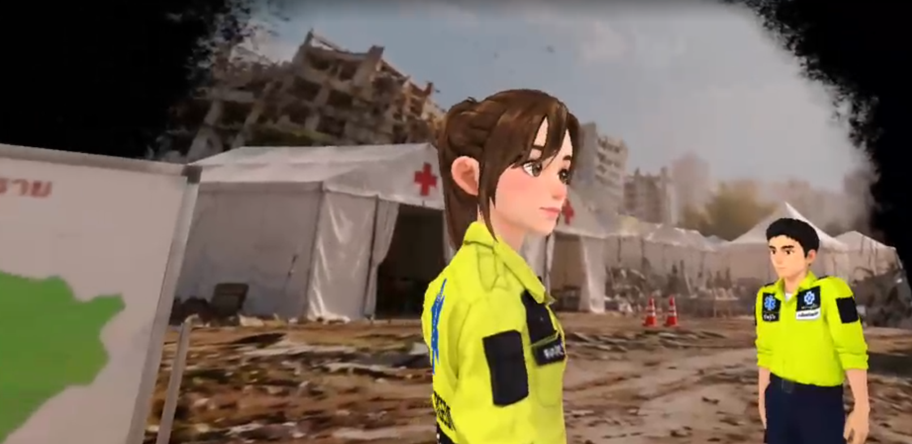

Overview
เกม VR จำลองสถานการณ์ฉุกเฉินทางการแพทย์ โดยให้ผู้เล่นรับบทบาทเป็นหน่วยกู้ชีพ (Paramedic) เข้าไปช่วยเหลือผู้บาดเจ็บ ณ จุดเกิดเหตุ
ผู้เล่นจะได้เรียนรู้และปฏิบัติตามขั้นตอนการกู้ชีพจริง ทั้งการประเมินคัดแยกความรุนแรงของผู้ป่วย (Triage), การปฐมพยาบาลเบื้องต้น, การกดหน้าอกทำ CPR และการใช้วิทยุสื่อสารรายงานสถานการณ์
ในโปรเจกต์นี้ผมได้รับหน้าที่พัฒนาระบบ Gameplay และการตอบสนองในโลก VR (VR Interactions) ทั้งหมด เพื่อให้ผู้เล่นได้สัมผัสขั้นตอนการกู้ชีพที่สมจริงและใช้งานง่าย
Key Features
- CPR Simulation: จำลองการทำ CPR ปั๊มหัวใจ โดยตรวจจับตำแหน่งมือและการทิ้งน้ำหนักตัว พร้อมคำนวณอัตราความเร็วการกด (BPM) แบบ Real-time
- Triage System: พัฒนาระบบประเมินและคัดแยกผู้ป่วยตามระดับความเร่งด่วน พร้อมการติดแท็กริบบิ้นแยกสี (เขียว, เหลือง, แดง, ดำ) เพื่อส่งต่อการรักษา
- Radio Communication: ระบบวิทยุสื่อสารจำลองในโลก VR โดยผู้เล่นหยิบวิทยุขึ้นมาเพื่อส่งสัญญาณและรายงานสถานการณ์ฉุกเฉินไปยังศูนย์สั่งการ
- VR Item Handling: ออกแบบการหยิบใช้อุปกรณ์ปฐมพยาบาลในกระเป๋าอย่างเป็นธรรมชาติ พร้อมระบบดึงไอเทมกลับเข้ากระเป๋าอัตโนมัติเมื่อทำหล่น

Challenges & Solutions
1. การจำลองการกดหน้าอกทำ CPR ในโลก VR
เนื่องจากอุปกรณ์ VR ไม่มีแรงต้านทานทางกายภาพ (Force Feedback) หากใช้การตรวจจับการชนทั่วไป มือจะกดทะลุตัวผู้ป่วย จึงได้ออกแบบระบบ CPRController โดยตรวจจับตำแหน่งมือให้อยู่บนหน้าอก ร่วมกับการตรวจจับระยะการโน้มตัวของผู้เล่น (ระยะกดต่ำลงของ Headset) เนื่องจากเวลาทำ CPR จริงจะต้องทิ้งน้ำหนักตัวลง พร้อมคำนวณอัตราความเร็วการกด (BPM) แบบ Real-time และใส่ระบบ Debounce เพื่อป้องกันการนับรอบซ้ำ
// Biomechanical CPR Detection & Real-time BPM Calculation
float currentY = _headAnchor.position.y;
float drop = _baselineY - currentY;
if (drop >= _compressionDepth && !_isCompressing) {
_isCompressing = true;
float now = Time.time;
float elapsed = now - _lastCompressionTime;
if (elapsed < _minInterval) return; // Debounce ป้องกันนับซ้ำ
_compressionCount++;
float bpm = 60f / elapsed;
_lastCompressionTime = now;
if (bpm < 200f) {
OnCompressionSuccess?.Invoke(bpm); // อัปเดตตัวเลขขึ้น UI Text
}
if (_compressionCount >= _requiredCompressions) {
_isCompleted = true;
OnCPRComplete?.Invoke(); // ผ่านเงื่อนไขกู้ชีพสำเร็จ
}
}
else if (drop < _compressionDepth * 0.3f && _isCompressing) {
_isCompressing = false;
_baselineY = currentY; // รีเซ็ตความสูงเตรียมรับการกดรอบถัดไป
}2. ระบบวิทยุสื่อสารจำลอง (Walkie-Talkie VR Interaction)
พัฒนาระบบ WalkieTalkieController ให้ผู้เล่นสามารถมีปฏิสัมพันธ์กับวิทยุสื่อสารในโลก VR ได้อย่างเป็นธรรมชาติ โดยตรวจจับการหยิบจับอุปกรณ์ (Grab Interaction) เพื่อเริ่มส่งสัญญาณวิทยุและนับเวลาการรายงานเคสผู้ป่วยไปยังศูนย์สั่งการ พร้อมผูก Event เข้ากับเสียงวิทยุสื่อสารและลำดับขั้นตอนของสถานการณ์ฉุกเฉิน
// ตรวจสอบสถานะและเงื่อนไขการส่งสัญญาณวิทยุสื่อสาร
bool isGrabMet = !_requireGrab || _isGrabbed;
bool isPttMet = !_requirePttButton || _isPttPressed;
if (isGrabMet && isPttMet) {
if (!_isTransmitting) {
_isTransmitting = true;
_transmissionTimer = 0f;
OnTransmissionStarted?.Invoke(); // เริ่มส่งสัญญาณและเล่นเสียงวิทยุ
}
_transmissionTimer += Time.deltaTime;
if (_transmissionTimer >= _requiredTransmissionTime) {
OnTransmissionCompleted?.Invoke(); // ส่งรายงานศูนย์สั่งการสำเร็จ
StopTransmission();
}
} else {
StopTransmission();
}3. ระบบคัดแยกผู้ป่วยและการจัดการไอเทมใน VR (Triage & Item Handling)
ออกแบบระบบคัดแยกผู้ป่วย (Triage System) แบบแยกส่วน (Decoupled) เพื่อให้จัดการเคสผู้ป่วยและอุปกรณ์ปฐมพยาบาลได้หลากหลาย พร้อมพัฒนาระบบ AutoReturnItem ช่วยอำนวยความสะดวกในโลก VR หากผู้เล่นทำอุปกรณ์หล่นหรือปล่อยมือทิ้งไว้ วัตถุจะรีเซ็ตแรงเฉื่อยและเด้งกลับเข้ากระเป๋าพยาบาลอัตโนมัติ ช่วยให้ผู้เล่นในงานนิทรรศการเล่นได้อย่างต่อเนื่องโดยไม่ต้องก้มเก็บของบนพื้น
// ระบบดึงอุปกรณ์กลับกระเป๋าพยาบาลอัตโนมัติเมื่อทำหล่น
public class AutoReturnItem : MonoBehaviour {
[SerializeField] private Transform _pouchAnchor;
[SerializeField] private float _returnDelay = 2.0f;
private Rigidbody _rb;
private bool _isHeld;
void Awake() => _rb = GetComponent<Rigidbody>();
public void OnItemGrabbed() => _isHeld = true;
public void OnItemReleased() {
_isHeld = false;
StartCoroutine(ReturnToPouchRoutine());
}
private IEnumerator ReturnToPouchRoutine() {
yield return new WaitForSeconds(_returnDelay);
// หากผู้เล่นไม่ได้ถืออยู่ ให้หยุดแรงเคลื่อนที่แล้วส่งกลับกระเป๋า
if (!_isHeld && _pouchAnchor != null) {
_rb.linearVelocity = Vector3.zero;
_rb.angularVelocity = Vector3.zero;
transform.position = _pouchAnchor.position;
transform.rotation = _pouchAnchor.rotation;
}
}
}